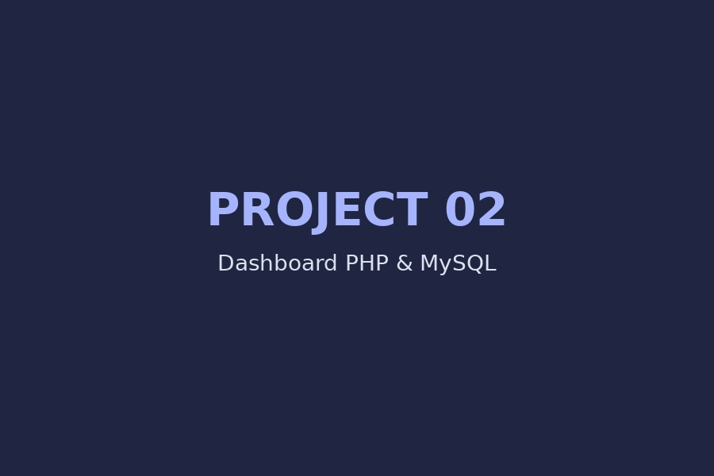

PORTFOLIO PRIBADI
Saya memiliki pengalaman di bidang IT, networking, CCTV, troubleshooting komputer,Printer, Pabx Telpon,serta, sedang mengembangkan kemampuan web development.
ABOUT ME
Saya adalah lulusan S1 Teknik Informatika yang memiliki pengalaman di bidang IT Support, networking, CCTV, troubleshooting komputer, dan instalasi jaringan.
Saat ini saya juga terus belajar pengembangan website menggunakan HTML, CSS, JavaScript, PHP, MySQL, serta Google Apps Script.
MY SKILLS
Membuat struktur dan tampilan website responsive.
Pemeliharaan dan Perawatan Server dan Asset IT
Ticketing Support, Membantu Devisi/Departement lain dalam memecahkan masalah
Instalasi, konfigurasi dan troubleshooting Komputer, Printer dan perangkat komputer lain nya.
Membuat website dinamis dan sistem database.
Membuat interaksi dan fungsi pada website.
LAN, IP address, troubleshooting dan instalasi jaringan.
Instalasi, konfigurasi dan troubleshooting CCTV.
Membangun aplikasi berbasis Google Sheets dan web app.
EXPERIENCE
Troubleshooting komputer, jaringan, Printer, CCTV dan perangkat IT. Setting PABX, Door Closer, Perawatan Server & Asset IT
Mengembangkan website menggunakan HTML, CSS, JavaScript, PHP dan MySQL.
Konfigurasi LAN, file sharing dan penyimpanan data melalui jaringan.
MY PROJECTS
Template undangan online responsive untuk perangkat HP dan laptop.

Dashboard dengan login, role pengguna, sidebar dan halaman data.
Konsep aplikasi tracking berbasis Google Sheets dan Apps Script.
CONTACT
Jika ingin berdiskusi tentang pekerjaan, project IT, networking atau pengembangan website, silakan hubungi saya.